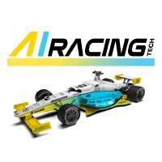

Databricks
DatabricksSoftware Engineering Intern
Built distributed rate limiting for log delivery, a custom Rust transform for Vector, and self-service tooling for production teams.
Berkeley, California
I’m an Electrical Engineering & Computer Science student at UC Berkeley interested in distributed systems, machine learning, robotics, and education. I’ve worked on production infrastructure at Databricks, natural-language tooling at Amazon Prime Video, robot perception at Bright Machines, and autonomous racing research at Berkeley.
CS61B discussion and lab materials, organized by semester.
Selected coursework
Computer vision experiments, from camera geometry to diffusion models.
Where I’ve worked
DatabricksBuilt distributed rate limiting for log delivery, a custom Rust transform for Vector, and self-service tooling for production teams.
Teach weekly sections and help lead course infrastructure supporting more than 1,000 students each semester.

Berkeley AI Racing TechDeveloping LiDAR and vision perception for an autonomous race car designed to operate at more than 160 mph.
Designed a natural-language search interface for content policy audits and provisioned the supporting serverless infrastructure.
 Lenovo
LenovoCreated an AI-powered lecture companion for transcription, summarization, and study guide generation.
 AMD
AMDDelivered an internal legal-data dashboard and Azure Functions APIs for retrieving and comparing case materials.
Built and optimized visual anomaly detection for motherboard assembly, including experiment management and automated tuning.